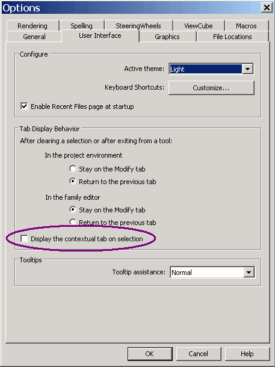

Locking the Add-Ins Ribbon Tab
Here is a minute user interface question of interest to developers that comes up from time to time:
Question: When I select an element in the Revit model, the ribbon tab is always switched. Is there any way to keep 'Add-Ins' tab focused at all times?
Answer: Here are two little tricks that might help:
- Drag the panel you wish to have available off the ribbon add-ins tab somewhere else on the screen. It will then remain available at all times, regardless of how the other ribbon tabs are switched back and forth.
- As I already mentioned discussing the ribbon tab context toggle, you can also select Big R > Options > User Interface and uncheck 'Display the contextual tab on Selection':
